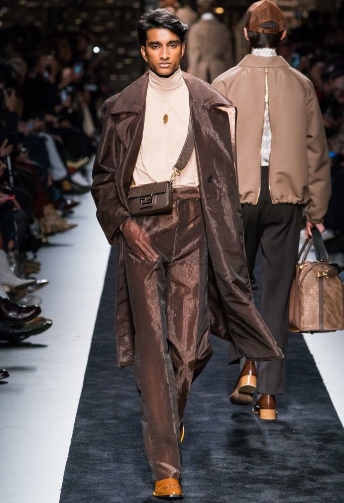

Fashion Event 2K23
In a blink of an eye, fashion month will kick off in New York City,
and continue in London, Milan, and conclude in Paris on October 4.
Each season the world’s top designers present their latest spectacular
designs to the fashion world in standout presentations and runways.
And we can always count on a few surprise moments to be thrown in. In
fact, this upcoming Spring-Summer 2023 season already feels like one
for the books.
Not all fashion capitals have released its official fashion
calendar yet, but designers have been teasing some news via social
media of what fashion aficionados can expect for the SS23 season.
Italian fashion houses Marni and Fendi will present their latest
collections in New York, designer Glenn Martens is opting to open his
sophomore runway show to the public, plus there are even more tidbits
we want to share so we’re rounding up everything we know so far for
the upcoming Spring-Summer 2023 Fashion Month schedule.
Aliet Sarah (Storm Models):For Aliet Sarah, fashion month was about more than clothes. “This season has been a manifestation of hope, ambition, dreams coming true,” shared the 18-year-old South Sudanese star via email. “Above all [it has been a] revelation that Africa is the future and models of color are being appreciated more, which is giving all my African sisters out there hope that one day their dreams will come true.” |
|
Chai Maximus (DNA):If there were a prize for best name in modeling, Chaikra Shanti “Chai” Maximus would win, hands down. Elegant yet offbeat, the 18-year-old Belgian newcomer made an impression at Loewe, Maison Margiela, and Christopher Kane. With multiple piercings and an ear gauge, Maximus brought a stylish edge to collections like Dior. A travel enthusiast who has been to Japan, India, and Spain all in the last few months, she headed into show season ready to explore. “It was my first full on season, so it was very busy!” she said. “I met a lot of cool new people and enjoyed doing shows with the friends I made last time. I’m looking forward to what the future will bring!” |
|
Ugbad Abdi (Next Management):Like many students, rising Somali star Ugbad Abdi took a gap year after high school to fulfill her personal goals. But rather than backpacking across Europe, Abdi decided to give modeling a try and quickly became one of the season’s standouts walking Miu Miu, Valentino, Off-White, and opening Marc Jacobs. “I started my Fashion Week by feeling really fearful because I didn’t know what to expect,” she said. “It has been a roller coaster of surprises.” |
|
Aishwarya Gupta:
Hailing from Lucknow, model Aishwarya Gupta is represented by
the modelling agency, Anima Creatives. |
|
|  |
Tuhir Brahmbhatt:
21-year-old model, Tuhir Brahmbhatt has not allowed his young
age to stand in the way of his modelling dreams. |